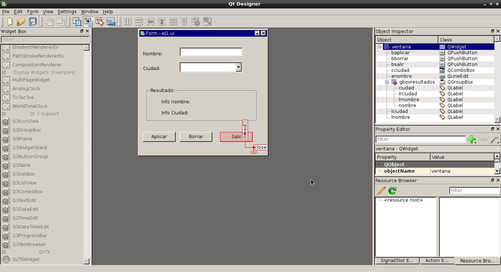
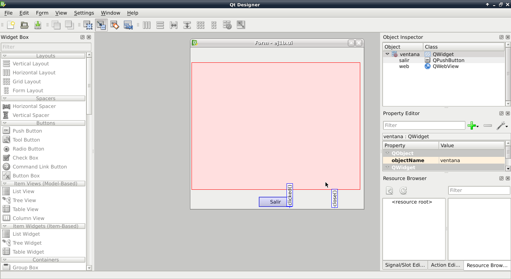
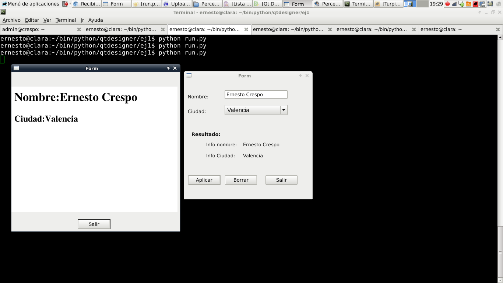

Tutorial de PyQt. Desarrollo con QtDesigner(2 ventanas). Parte 12
Posted on dom 16 septiembre 2012 in Tutorial Python • 4 min read
En este artículo se explicará como realizar llamadas a 2 ventanas creadas desde qtdesigner.
La primera ventana tiene una entrada de datos para el nombre y un combo box donde se lista ciudades, se tiene 3 botónes aplicar, borrar y salir; aplicar toma el nombre y la ciudad y lo muestra en un par de etiquetas; adicionalmente muestra una ventana con información en html sobre el nombre y la ciudad, esa ventana tiene un botón para salir que oculta dicha ventana.
A continuación se muestra ambas ventanas con las señales definidas desde el qtdesigner:
Ventana principal:

Ventana secundaria:

Se salvan ambas ventanas con el nombre ej1.ui y ej1b.ui, luego se convierten ambos archivos a código python con los siguientes comandos:
pyuic4 -x ej1.ui -o ej1.py
pyuic4 -x ej1b.ui -o ej1b.py
El código de ej1.py y ej1b.py se muestra a continuación:
Archivo ej1.py:
# -*- coding: utf-8 -*-
# Form implementation generated from reading ui file 'ej1.ui'
#
# Created: Sun Sep 16 13:21:47 2012
# by: PyQt4 UI code generator 4.9.3
#
# WARNING! All changes made in this file will be lost!
from PyQt4 import QtCore, QtGui
try:
_fromUtf8 = QtCore.QString.fromUtf8
except AttributeError:
_fromUtf8 = lambda s: s
class Ui_ventana(object):
def setupUi(self, ventana):
ventana.setObjectName(_fromUtf8("ventana"))
ventana.resize(348, 322)
self.lnombre = QtGui.QLabel(ventana)
self.lnombre.setGeometry(QtCore.QRect(10, 40, 62, 15))
self.lnombre.setObjectName(_fromUtf8("lnombre"))
self.lciudad = QtGui.QLabel(ventana)
self.lciudad.setGeometry(QtCore.QRect(10, 80, 62, 15))
self.lciudad.setObjectName(_fromUtf8("lciudad"))
self.gboxresultados = QtGui.QGroupBox(ventana)
self.gboxresultados.setGeometry(QtCore.QRect(20, 140, 301, 91))
self.gboxresultados.setObjectName(_fromUtf8("gboxresultados"))
self.lrnombre = QtGui.QLabel(self.gboxresultados)
self.lrnombre.setGeometry(QtCore.QRect(40, 30, 91, 16))
self.lrnombre.setObjectName(_fromUtf8("lrnombre"))
self.lrciudad = QtGui.QLabel(self.gboxresultados)
self.lrciudad.setGeometry(QtCore.QRect(40, 60, 81, 16))
self.lrciudad.setObjectName(_fromUtf8("lrciudad"))
self.nombre = QtGui.QLabel(self.gboxresultados)
self.nombre.setGeometry(QtCore.QRect(140, 30, 111, 16))
self.nombre.setText(_fromUtf8(""))
self.nombre.setObjectName(_fromUtf8("nombre"))
self.ciudad = QtGui.QLabel(self.gboxresultados)
self.ciudad.setGeometry(QtCore.QRect(140, 60, 101, 16))
self.ciudad.setText(_fromUtf8(""))
self.ciudad.setObjectName(_fromUtf8("ciudad"))
self.baplicar = QtGui.QPushButton(ventana)
self.baplicar.setGeometry(QtCore.QRect(10, 260, 89, 27))
self.baplicar.setObjectName(_fromUtf8("baplicar"))
self.bsalir = QtGui.QPushButton(ventana)
self.bsalir.setGeometry(QtCore.QRect(220, 260, 89, 27))
self.bsalir.setObjectName(_fromUtf8("bsalir"))
self.cciudad = QtGui.QComboBox(ventana)
self.cciudad.setGeometry(QtCore.QRect(110, 70, 171, 27))
font = QtGui.QFont()
font.setFamily(_fromUtf8("Liberation Sans"))
font.setPointSize(12)
self.cciudad.setFont(font)
self.cciudad.setMaxVisibleItems(5)
self.cciudad.setObjectName(_fromUtf8("cciudad"))
self.enombre = QtGui.QLineEdit(ventana)
self.enombre.setGeometry(QtCore.QRect(110, 30, 171, 23))
self.enombre.setObjectName(_fromUtf8("enombre"))
self.bborrar = QtGui.QPushButton(ventana)
self.bborrar.setGeometry(QtCore.QRect(110, 260, 89, 27))
self.bborrar.setObjectName(_fromUtf8("bborrar"))
self.retranslateUi(ventana)
QtCore.QObject.connect(self.bsalir, QtCore.SIGNAL(_fromUtf8("clicked()")), ventana.close)
QtCore.QObject.connect(self.bborrar, QtCore.SIGNAL(_fromUtf8("clicked()")), self.ciudad.clear)
QtCore.QObject.connect(self.bborrar, QtCore.SIGNAL(_fromUtf8("clicked()")), self.nombre.clear)
QtCore.QObject.connect(self.bborrar, QtCore.SIGNAL(_fromUtf8("clicked()")), self.enombre.clear)
QtCore.QMetaObject.connectSlotsByName(ventana)
def retranslateUi(self, ventana):
ventana.setWindowTitle(QtGui.QApplication.translate("ventana", "Form", None, QtGui.QApplication.UnicodeUTF8))
self.lnombre.setText(QtGui.QApplication.translate("ventana", "Nombre:", None, QtGui.QApplication.UnicodeUTF8))
self.lciudad.setText(QtGui.QApplication.translate("ventana", "Ciudad:", None, QtGui.QApplication.UnicodeUTF8))
self.gboxresultados.setTitle(QtGui.QApplication.translate("ventana", "Resultado:", None, QtGui.QApplication.UnicodeUTF8))
self.lrnombre.setText(QtGui.QApplication.translate("ventana", "Info nombre:", None, QtGui.QApplication.UnicodeUTF8))
self.lrciudad.setText(QtGui.QApplication.translate("ventana", "Info Ciudad:", None, QtGui.QApplication.UnicodeUTF8))
self.baplicar.setText(QtGui.QApplication.translate("ventana", "Aplicar", None, QtGui.QApplication.UnicodeUTF8))
self.bsalir.setText(QtGui.QApplication.translate("ventana", "Salir", None, QtGui.QApplication.UnicodeUTF8))
self.bborrar.setText(QtGui.QApplication.translate("ventana", "Borrar", None, QtGui.QApplication.UnicodeUTF8))
if __name__ == "__main__":
import sys
app = QtGui.QApplication(sys.argv)
ventana = QtGui.QWidget()
ui = Ui_ventana()
ui.setupUi(ventana)
ventana.show()
sys.exit(app.exec_())
el archivo de ej1b.py se muestra a continuación:
# -*- coding: utf-8 -*-
# Form implementation generated from reading ui file 'ej1b.ui'
#
# Created: Sun Sep 16 11:55:31 2012
# by: PyQt4 UI code generator 4.9.3
#
# WARNING! All changes made in this file will be lost!
from PyQt4 import QtCore, QtGui
try:
_fromUtf8 = QtCore.QString.fromUtf8
except AttributeError:
_fromUtf8 = lambda s: s
class Ui_ventana_web(object):
def setupUi(self, ventana_web):
ventana_web.setObjectName(_fromUtf8("ventana_web"))
ventana_web.resize(458, 430)
self.salir = QtGui.QPushButton(ventana_web)
self.salir.setGeometry(QtCore.QRect(180, 400, 89, 27))
self.salir.setObjectName(_fromUtf8("salir"))
self.web = QtWebKit.QWebView(ventana_web)
self.web.setGeometry(QtCore.QRect(0, 40, 451, 341))
self.web.setUrl(QtCore.QUrl(_fromUtf8("about:blank")))
self.web.setObjectName(_fromUtf8("web"))
self.retranslateUi(ventana_web)
QtCore.QObject.connect(self.salir, QtCore.SIGNAL(_fromUtf8("clicked()")), ventana_web.hide)
QtCore.QMetaObject.connectSlotsByName(ventana_web)
def retranslateUi(self, ventana_web):
ventana_web.setWindowTitle(QtGui.QApplication.translate("ventana_web", "Form", None, QtGui.QApplication.UnicodeUTF8))
self.salir.setText(QtGui.QApplication.translate("ventana_web", "Salir", None, QtGui.QApplication.UnicodeUTF8))
from PyQt4 import QtWebKit
if __name__ == "__main__":
import sys
app = QtGui.QApplication(sys.argv)
ventana_web = QtGui.QWidget()
ui = Ui_ventana_web()
ui.setupUi(ventana_web)
ventana_web.show()
sys.exit(app.exec_())
Como se muestra en ambos archivos se tiene 2 clases donde se define cada ventana, sus widgets, sus señalesy métodos.
Estos 2 archivos no se modifican directamente, si se necesitan realizar cambios en la interfaz con el qtdesigner y al volver a crearlos se perderá todo lo que se le haya modificado a dichos archivos. La solución es crear un script en python donde se importe las clases de estos 2 archivos y se haga las modificaciones necesarias (nuevas señales, modificación de valores en los widgets, la llamada de las ventanas, etc).
El archivo run.py será el que maneje las personalizaciones de las señales, nuevos métodos, nuevas variables y el manejo de las ventanas:
#!/usr/bin/env python
# -*- coding: utf-8 -*-
#Se importa el módulo sys
import sys
#Se importa de PyQt4 QtCore y QtGui
from PyQt4 import QtCore, QtGui
#Se importa la clase Ui_ventana de ej1
from ej1 import Ui_ventana
#Se importa la clase Ui_ventana_web de ej1b
from ej1b import Ui_ventana_web
#Se crea la clase de la ventana secundaria
#Se define el archivo html que abrirá el widget web
class DialogSecundaria(QtGui.QDialog):
def __init__(self, parent=None):
QtGui.QWidget.__init__(self, parent)
self.ui_d = Ui_ventana_web()
self.ui_d.setupUi(self)
self.ui_d.web.setUrl(QtCore.QUrl("file:///home/ernesto/bin/python/qtdesigner/ej1/temporal.html"))
#Se crea la clase principal
#Donde se define la lista de ciudades y se agregan al widget combobox
#Se genera la señal del botón baplicar con el método AbrirVentana,
#el cual hace el llamado a la clase ventana secundaria.
class VentanaPrincipal(QtGui.QDialog):
def __init__(self, parent=None):
QtGui.QWidget.__init__(self, parent)
self.ui = Ui_ventana()
self.__ciudades = ["Valencia","Maracay","Barquisimeto","Merida","Caracas"]
self.ui.setupUi(self)
for ciudad in self.__ciudades:
self.ui.cciudad.addItem(ciudad)
QtCore.QObject.connect(self.ui.baplicar, QtCore.SIGNAL("clicked()"), self.AbrirVentana)
def AbrirVentana(self):
#Se crea un archivo html donde se le pasa los datos del nombre y ciudad en formato html
archivo = open("/home/ernesto/bin/python/qtdesigner/ej1/temporal.html","w")
mensaje = """<html>
<head><title>Reporte de prueba</title></head>
<body>
<h1>Nombre:%s</h1>
<h2>Ciudad:%s</h2>
</body>
</html>""" %(self.ui.enombre.text(),self.ui.cciudad.currentText())
lista = [mensaje]
archivo.writelines(lista)
archivo.close()
#Se publica el nombre y la ciudad en la ventana principal
self.ui.nombre.setText(self.ui.enombre.text())
self.ui.ciudad.setText(self.ui.cciudad.currentText())
#Se muestra la ventana secundaria.
self.w = DialogSecundaria()
self.w.show()
def quit(self):
sys.exit(app.exec_())
if __name__ == "__main__":
app = QtGui.QApplication(sys.argv)
myapp = VentanaPrincipal()
myapp.show()
sys.exit(app.exec_())
En la siguiente figura se muestra la aplicación en funcionamiento:

Si están interesados es revisar las interfaces hechas con qtdesigner y el código python en el enlace de mi repositorio en bitbucket lo pueden encontrar.
Quiero agradecer a Hernán Ramírez por los tips para el manejo de varias ventanas, aquí está su blog.
¡Haz tu donativo! Si te gustó el artículo puedes realizar un donativo con Bitcoin (BTC) usando la billetera digital de tu preferencia a la siguiente dirección: 17MtNybhdkA9GV3UNS6BTwPcuhjXoPrSzV
O Escaneando el código QR desde la billetera: